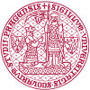

Ethnic, racial and religious minorities experience discriminatory behaviour and prejudicial attitudes in multiple life domains, which accumulates across the life course. This continuous exposure perpetuates minorities’ subordinate position across generations. The main contribution of EqualStrength is to investigate cumulative and structural forms of discrimination, outgroup prejudice and hate crimes against ethnic, racial and religious minorities from a cross-setting and intersectional perspective. We deploy innovative, targetted and effective methods, which include field experiments, population-level secondary survey data, meso-level policy analysis and targeted data collection to include the perspective of minority groups who directly confront discrimination.
Objectives
Our approach allows us to meet five interrelated research objectives:
- First, we reveal structural and cumulative forms of ethnic and racial discrimination in Europe, focusing on the experience of Muslim, Roma and Black minorities.
- Second, we assess the systemic nature of prejudice across life domains, targetting anti-Muslim, anti-Black and anti-Roma attitudes.
- Third, we analyse policy and institutional factors that contribute to structural discrimination and prejudices.
- Fourth, we document the lived experiences and coping strategies adopted to confront everyday discrimination.
- And finally, we highlight the intersection of race, ethnicity and religion with other dimensions of inequality such as gender, sexual orientation, and socioeconomic position.
Consortium members
